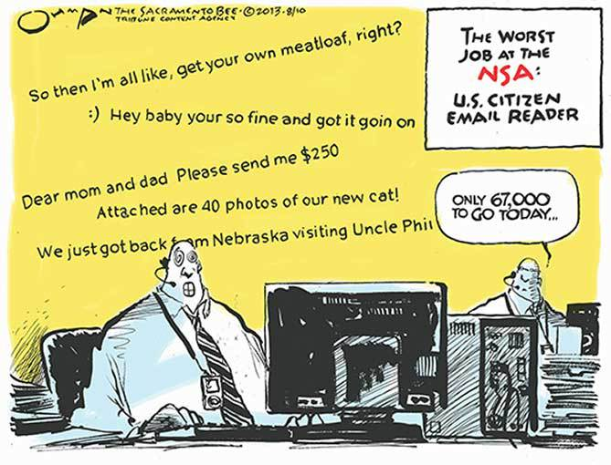

In which I relate my experience as an NSA employee and impart my thoughts on the policies in place, my former coworkers, and the current cyber war.
I am an American patriot. Many impressions may come to mind at that word, “patriot”: perhaps that I am a Republican, that I don’t care about people outside the US, or that I am afraid of them. In my case, none of these conceptions apply. Patriotism to me simply means that I care about the US and its future. I hope my story gives you further information and perspective on the NSA’s activities.
Background
I was a spy for the US government. Not the Bond/Alias type of agent, but the electronic type – a cyber spy. I helped build small pieces of the global systems that gather electronic intelligence. And I am one of the few people whose former employment at the NSA you can verify: I appeared in a recruitment video, which is displayed on their career website. (Pardon my halting speech – I was declassifying on the fly.) You can match my face to the photo on my Kickstarter page.
I was a civilian employee of the NSA for two years starting in mid-2010. I worked at the Agency’s Fort Meade headquarters for the first year. It was a dramatic time in the intelligence world, encompassing Stuxnet (the first known example of cyberwarfare resulting in a physical effect, reportedly made by the NSA and Israel), the first major release of US documents on WikiLeaks, and the locating of bin Laden. The declassified version of my job title was “Global Network Vulnerability Analyst.” I was in the Computer Network Operations Development Program, and my office was S32X: Signals Intelligence Directorate (S) > Data Acquisition (S3) > Tailored Access Operations (S32) > Special Tactics and Techniques (S32X). Most of my time was spent writing Ruby code to help with the systems that gather and manage electronic intelligence.
Surveillance
Many are concerned about the NSA listening to their phone calls and reading their email messages. I believe that most should not be very concerned because most are not sending email to intelligence targets. Email that isn’t related to intelligence is rarely viewed, and it’s even less often viewed if it’s from a US citizen. Every Agency employee goes through orientation, in which we are taught about the federal laws that govern NSA/US Cyber Command: Title 10 and Title 50. We all know that it’s illegal to look at a US citizen’s data without a court order. I use the term “look” deliberately: the Agency makes the distinction that looking at data is surveillance, while gathering it from locations outside the US is not. We gathered everything, and only looked at a tiny percentage of it. I am okay with this distinction both because I don’t mind if my emails are copied to an Agency database and likely never read and because from a technical standpoint it would seriously impair our ability to spy if we couldn’t gather everything.* The Agency is an intelligence organization, not a law enforcement agency.

The NSA is not a law enforcement agency.
The NSA copy of my emails won’t be viewed by police or FBI investigating me about marijuana use, for instance. Law enforcement might get a search warrant and retrieve a copy from Google, but not from the NSA. FBI employees don’t even have SI (communications intelligence) clearance, and all NSA-collected data is classified Top Secret//SI. The NSA copy of my emails will only be viewed if the Agency can convince a judge that I might be a foreign agent. And the judges aren’t pushovers. I remember that one time a judge ordered the Agency to suspend a certain type of operation because it had mistakenly generated a report that included US person data. The system had to be reprogrammed to preclude that type of mistake before it could be used again. This was not a trivial decision: not being able to use that system for a time had a serious impact on our ability to get the job done.
Edit 12/15/13: Reuters reports of a Special Operations Division (SOD) in the DEA that tips off law enforcement from classified sources, including NSA collect. I have no independent knowledge of this program. Two sources state, “Because warrantless eavesdropping on Americans is illegal, tips from intelligence agencies are generally not forwarded to the SOD until a caller’s citizenship can be verified.” Tips from US-citizen data should always be screened out. I do not think they should only “generally” be screened, and if that is the case, as far as I can tell it’s illegal. I do not take issue with the practice of parallel construction in general. Consider the case in which one TS//SI collection station or method gathers data about a foreigner that leads to a SOD tip. The existence of the tip cannot be revealed because knowledge of it could compromise the collection station/method.
The vast majority of unauthorized retrievals of US-person data are unintentional. I do not care about these cases because the analysts do not care about my data. They’re looking for intelligence about foreign entities of interest. They won’t spent time on my private love letters. I do care about intentional retrieval of my data, and there have been rare cases of such illegal actions (the chair of the intelligence committee estimates once a year): for instance, one employee spied on a spouse.

Analysts don’t care about what’s going on in your life.
As we were reminded by an internal memo after WikiLeaks, even when something is public knowledge, if it’s still classified, we can’t talk about it outside a SCIF. So while there is much information online about XKeyscore (I’m not saying anything about its validity), only a small amount of information about XKS has been declassified through Agency statements. I can say it was an analyst tool that I had access to. I had to make sure that my searches didn’t use US selectors, such as a US phone number or IP address. A required field of every search was a description of what the search was for. This justification, along with the selectors, was examined by my assigned reviewer, one of my superiors. I didn’t test it, but I’m sure there was automated analysis that prevented or flagged use of US selectors. There was another system I worked on that for instance automatically ignored all US IP addresses. I knew that if I were to query in XKS for US persons or perform non-US queries for personal reasons I could be fired, and at least in the former case criminally prosecuted. Not that I seriously considered doing so. Which brings me to the next topic, the character of NSA employees.
People
I’d like to give you a view of what the people behind the NSA are like. I have a very high opinion of my former coworkers. My opinion of course does not preclude the possibility of an NSA employee being a bad person. And even if they are well-intentioned, they may think of developing intelligence capabilities before implementing the oversight and minimization aspects when designing new systems. But the general character does suggest a low likelihood that they will abuse their powers for personal gain.
NSA employees are the law-abiding type. Firstly, the lawbreaking type isn’t likely to want to work for the government. Secondly, if they did apply, it is quite unlikely they would make it through the clearance process. All NSA employees receive Top Secret and SI clearance, which requires a background check, psych screening, and counterintelligence and lifestyle polygraph tests. In the background check, interviewers call your references and walk around your neighborhood, workplace, or school, asking people about your character. You take a long automated psych test that flags troubling personality traits. It felt thorough, and I remember one inquiry from the old, stern psychologist interviewing me: “The test showed you may have trouble asserting yourself when needed. Do you agree?” (To which I replied, “No, I believe I can assert myself when needed.”) They examine your 127-page Standard Form 86, in which you include lists of your illegal activities, foreigners you have worked with or befriended, and where you have lived and traveled in your life and with whom. They verify your SF-86 information in a number of ways, including during the polygraph. The polygrapher also asks many questions to determine whether you are law-abiding and patriotic. While the efficacy of polygraphs has been questioned, and while I’m sure given sufficient training and natural psychosomatic control one could beat them, I think they’re fairly accurate. They may yield some false positives (I, for example, initially failed when I said, “No” in response to, “Have you ever given classified information to a foreign entity?” – this is before I knew any classified information – and had to fly back to DC for a second attempt a month later), but I believe false negatives are rare.
But I digress – the rare cases of unauthorized data retrieval were not polygraph-trained foreign spies trying to infiltrate the Agency, but rather regular employees illicitly viewing communications for personal gain. I do not believe that there are many such employees. I was very impressed by my colleagues at the Agency. I was impressed not only by their technical ability, but also by their dedication to the mission. They are the most earnest and conscientious group of people I have ever met.
War
In 1991 the USSR dissolved and the Cold War ended. The world let out a sigh of relief, safe in the the knowledge that humanity wasn’t crazy enough to destroy itself. That security we had is gone. North Korea has nuclear weapons and is threatening to fire them at the US. While I find this alarming, and I hope you do too, I do not mean to fear monger. I do not think fear should rule your judgement, but the reality is that we still live in world that has hostile groups of people, my own country included. Reality should enter your cost-benefit analyses.

I don’t even use the T-word.
When two countries have nuclear weapons, they can’t openly physically fight each other without going MAD. One of the ways in which they struggle is via computers. An international cyber war has been going on for years. It is reportedly not limited to nations that are overtly hostile. It has been escalating and will continue to do so. There is much about the war that is not publicly known, but the public information is scary enough. The Washington Post reported on entities gaining access to computers in DoD and other federal agency networks since 2003. CBS reported that in 2007 the US suffered an “espionage Pearl Harbor” in which entities “broke into all of the high tech agencies, all of the military agencies, and downloaded terabytes of information.” The targets of the attacks are not limited to just military and government: in 2010 the government warned industry about China’s military hacking into American companies’ networks.
One could argue that most of the cyber “attacks” mentioned above aren’t really acts of war, but rather spying. However, when you gain control of a computer, you can do more than just copy data – you can change things. Computers now control many things and will control more in the future. Take for example the power grid. My thesis at Dartmouth was entitled, “Creating Large Disturbances in the Power Grid: Methods of Attack After Cyber Infiltration,” and I am confident that the grid can be taken down by a hacker who has gained access to control system computers. While power grid management networks are supposed to be air gapped for security, Iran’s nuclear enrichment facility control network was protected by an air gap, and that gap was jumped by Stuxnet. Halting use of USB drives is not enough to protect air gapped systems, as Ruiu’s recent research on badBIOS demonstrates. One indication of the gravity of cyber war is the DoD’s belief that they may need to use nuclear weapons in response to future cyber attacks.
Conclusion
If you are a US citizen, I hope you are reassured to know how capable and thorough your cyber spy agency and military command are. I was extremely impressed by the Agency’s capabilities, both those that have been declassified and those that are still unknown to the public. If you are a citizen of the UK, Canada, New Zealand, or Australia, you may also be glad, because everything the NSA collects is by default shared with your government (the default classification is TS//SI//REL TO FVEY, or “release to five eyes”, which are the aforementioned countries and the US). Even if you are not a citizen of the Five Eyes, you shouldn’t be worried about your data being viewed unless you’re involved with a group of interest, such as a foreign government or violent organization. You may be unhappy about the fact that we’re spying on your government, just as I am unhappy that the Chinese military is hacking into America’s government and industry. And I would prefer a world in which spying was unnecessary. But humanity is not there yet.
I do believe that the safeguards against unauthorized data retrieval by Agency employees can and should be improved. I do not believe that their information-gathering powers should be curtailed. Such restriction would not only hinder the Agency’s ability to gather intelligence, but also impede its ability to wage cyberwarfare.* The NSA is our best hope in this war. In my mind, the Agency’s continued dominance of the Internet is absolutely worth the once-a-year one-in-three-hundred-million chance that your private data will be purposefully viewed by an NSA employee.
As to why I resigned – I wanted to work more on personal coding projects and start a company. You can help fund my food startup’s first product, the most healthy mayonnaise ever mass-produced, on Kickstarter.
Discussion on Hacker News. Follow me at @lorendsr.
Fix typos or grammatical errors by proposing edits on Github.
This essay was deemed UNCLASSIFIED and approved for public release by the NSA’s office of Pre-Publication Review on 11/21/2013 (PP 14-0081).
Note: When I make a company that stores private user data, I will do all I can to make sure that no party, including the US government, can access that data without permission. Since the company will be incorporated in the US, the only permission that will be given is what the company is legally required to give, which is permission to the USG pursuant to court orders. I would also notify the users that their data was accessed, if it was legal to do so.